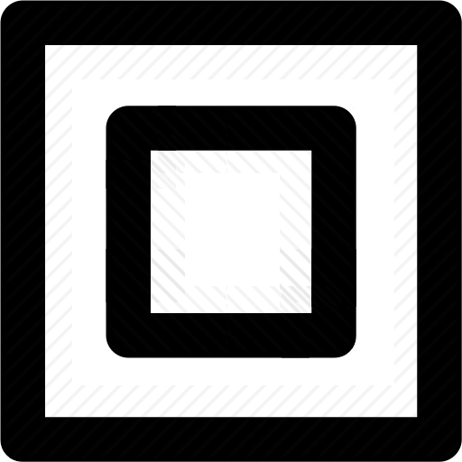
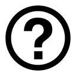
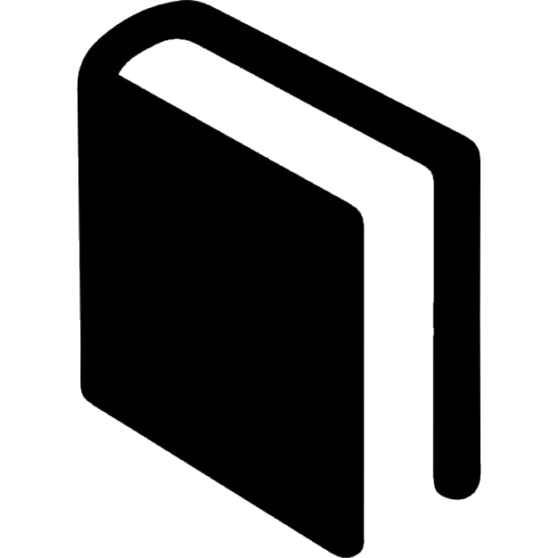
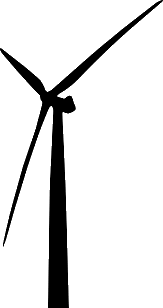

Legenda
Gebouwen
Resultaat
Ontwerp je buurt
Nog niets geselecteerd
-
Maatregelen: - panden (- adr. / - pc.)
Type of klik op de kaart en kies een postcode, buurt, wijk of gemeente en bekijk wat de kosten en de baten zijn van isolatiemaatregelen of alternatieve energiebronnen.
In het resultaatscherm staan de kosten en de baten voor jouw buurt en de door jou gekozen maatregelen.
Alle beschikbare kaartlagen bekijken? Ga dan naar het kaartlagen overzicht.
Kaartlagen
Bekijk meer dan 100 kaartlagen met informatie over je buurt.
De geopende kaartlagen kan je in de leganda rechts aan- en uitzetten of de transparantie aanpassen.
Klik op de kaart voor informatie over de buurt en de geopende kaartlagen.
Wat zijn bijvoorbeeld de mogelijkheden voor windmolens of geothermie. Waar zitten de gasaansluitingen en waar lopen de electiciteitsleidingen.
Nu kijken wat je in jouw buurt kan besparen? Ga dan naar 'ontwerp je buurt'
Menu
 Inloggen
Inloggen
Bekijk je buurt
Ontwerp je buurt
Contact
 Documentatie
Welkom bij Pico
PICO verstrekt relevante informatie over energie, CO2, kosten en opbrengsten, aan woningcorporaties, vastgoedeigenaren, bewonerscollectieven, (lagere) overheden, netbeheerders en energieleveranciers. PICO zet de mogelijkheden voor energiebesparing, duurzame opwekking en gebruik letterlijk op de kaart.
PICO is ontwikkeld door een samenwerkingsverband van Geodan, TNO, Alliander, Ecofys, NRG031, en Esri Nederland.

